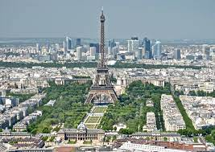
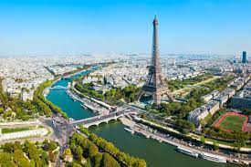
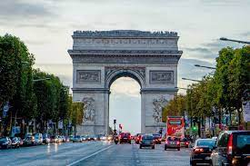
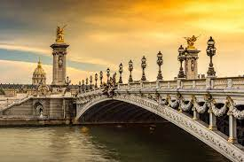
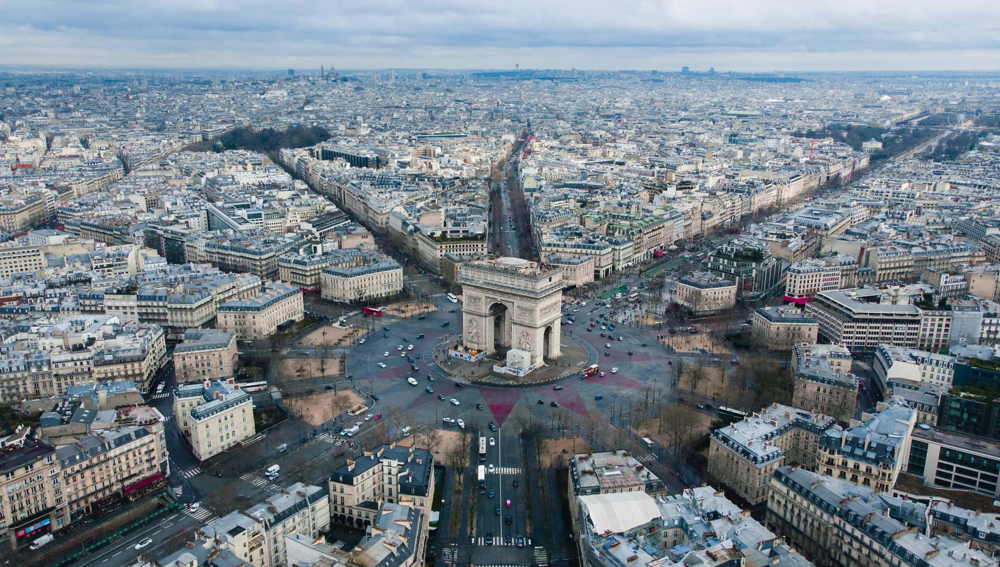

Here are some highlights from my trip to Paris.
    Paris, often referred to as the "City of Light," is a place of timeless enchantment and cultural richness. It's a city where history seamlessly intertwines with modernity, creating a unique and captivating tapestry of life. One of the most iconic landmarks, the Eiffel Tower, stands tall as a symbol of Paris and France itself. Built for the 1889 World's Fair, it was initially met with mixed reactions, but it has since become an enduring emblem of romance and architectural brilliance. The Louvre Museum, a treasure trove of art and history, is home to the enigmatic Mona Lisa, among countless other masterpieces. Its glass pyramid entrance is a striking fusion of classical and contemporary aesthetics. Parisian cuisine is a culinary odyssey, offering an array of delectable pastries, sumptuous cheeses, and fine wines. Sidewalk cafés provide the perfect setting for sipping espresso and people-watching.
But Paris is not just about landmarks and food; it's a city that embraces culture and intellect. The historic Latin Quarter is a haven for book lovers, with its countless bookstores, including the famous Shakespeare and Company. Paris is a place where fashion, art, and creativity converge. The city has long been a global fashion capital, and its streets are like a continuous catwalk. The Seine River meanders through the city, flanked by picturesque bridges and charming neighborhoods. Strolling along its banks is a timeless experience. In Paris, the essence of romance is omnipresent, making it the quintessential destination for lovers. The city's allure is an enduring testament to its ability to captivate hearts and minds for generations.